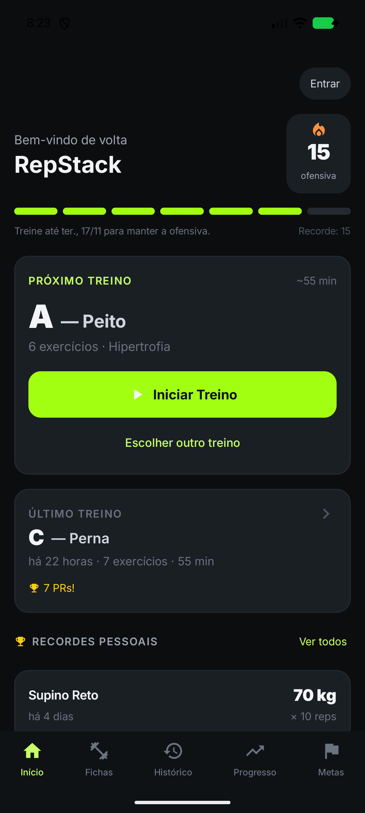
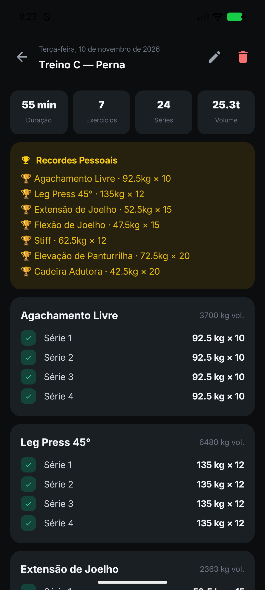

01 / Ficha
Fichas que você controla, inclusive fora do app.
Crie, edite, duplique e ative fichas. Cada treino tem seus exercícios, séries, faixa de reps e descanso. Importa e exporta em JSON, então a ficha é sua e não do servidor.
- Ciclo A/B/C
- O próximo treino aparece na tela inicial com a estimativa de duração.
- ~45 exercícios de fábrica
- Mais os seus. Substitua um exercício no meio do treino sem perder a ficha.
- Ficha exemplo "Hipertrofia"
- Vem pronta na primeira abertura para você treinar hoje.

